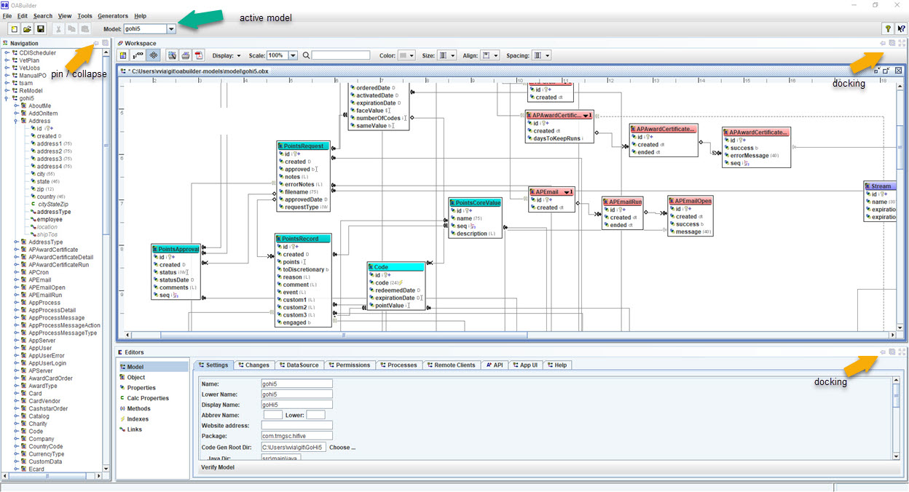

Main Window
This is the main window for OABuilder, divided into the following sections.

- Menubar
- Toolbar
- Navigation
- Desktop/Workspace, and toolbar
- Editors
- Statusbar
- Docking features

- active model displayed in desktop/workspace.
- docking framework buttons.